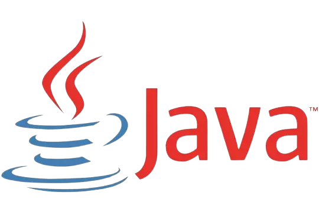
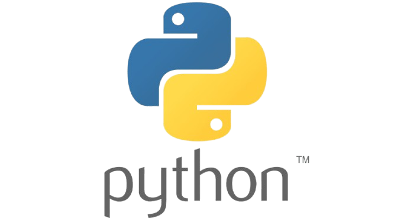
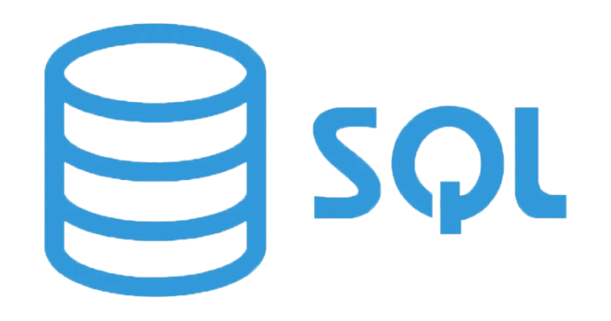

Langages
Langages utilisés
Le Big Data repose sur divers langages de programmation, chacun ayant ses forces et faiblesses selon le contexte d'utilisation. Voici les principaux langages utilisés :
1. Java
Pourquoi ? Java est largement utilisé dans l’écosystème Big Data, notamment parce que la majorité des frameworks Big Data (comme Hadoop et Spark) sont développés en Java ou en Scala.
Points forts :
Portabilité et compatibilité multiplateforme (JVM).
Haute performance et gestion efficace de la mémoire.
Écosystème riche avec de nombreuses bibliothèques dédiées au traitement de données massives.
Stabilité et robustesse pour les systèmes distribués.
2. Scala
Pourquoi ? Scala est souvent préféré pour les projets Big Data modernes, notamment avec Apache Spark.
Points forts :
Syntaxe concise et expressive.
Interopérabilité avec Java.
Excellente gestion du traitement parallèle et distribué.
3. Python
Pourquoi ? Python est très populaire pour l’analyse des données, l’apprentissage automatique et la visualisation.
Points forts :
Facilité d’apprentissage et grande expressivité.
Bibliothèques puissantes comme Pandas, NumPy, PySpark et TensorFlow.
Idéal pour le prototypage et l’expérimentation.
Limite : Moins performant que Java et Scala pour les traitements massifs en production.
4. R
Pourquoi ? R est utilisé pour l’analyse statistique et les visualisations avancées.
Points forts :
Excellente gestion des modèles statistiques et des graphiques.
Utilisé principalement dans la recherche et l’analyse des données.
Limite : Moins performant pour le traitement de très grands volumes de données.
5. SQL
Pourquoi ? SQL reste incontournable pour manipuler les bases de données relationnelles et les entrepôts de données Big Data (comme Hive, Presto et Google BigQuery).
Points forts :
Langage standardisé et optimisé pour l’interrogation de données structurées.
Facilité d’intégration avec Hadoop via Apache Hive.
|  |  |  |
Pourquoi Java est le meilleur langage pour le Big Data ?
Java est considéré comme le meilleur langage pour le Big Data pour plusieurs raisons : Écosystème Big Data basé sur Java Apache Hadoop, l’un des frameworks les plus utilisés en Big Data, est écrit en Java. Apache Spark, bien que principalement écrit en Scala, est entièrement compatible avec Java. Apache Kafka, un système de streaming de données, est aussi développé en Java. Performance et scalabilité Java offre une gestion optimisée de la mémoire grâce à la JVM, permettant un traitement efficace des gros volumes de données. Il est capable de gérer des systèmes distribués sur des clusters de plusieurs machines. Interopérabilité avec d'autres langages Java fonctionne avec Scala, Python et R, facilitant l’intégration avec des bibliothèques d’analyse de données. Sécurité et robustesse Grâce à son fort typage et son modèle de gestion des exceptions, Java est plus stable pour les systèmes critiques en production. Il offre une bonne sécurité pour la gestion des transactions de données sensibles. Communauté et support Étant l’un des langages les plus populaires, Java dispose d’un vaste écosystème de bibliothèques, forums et support technique. Compatibilité avec le Cloud La majorité des services cloud supportent nativement Java pour le traitement des Big Data (AWS, Google Cloud, Azure).
Utilisation de Java en bigdata